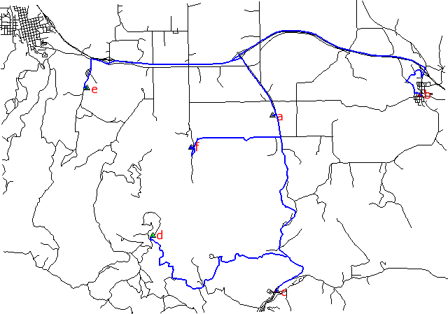
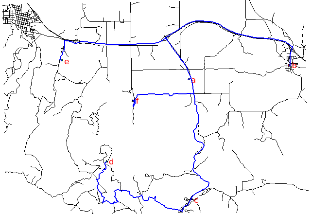

A Steiner tree is used to calculate the minimum-cost vector network connecting some number of end nodes in a network framework. For example it could be used to find the path following a road system which will minimize the amount of fibre optic cable needed to connect a series of satellite offices.
Costs may be either line lengths, or attributes saved in a database table. These attribute values are taken as costs of whole segments, not as costs to traverse a length unit (e.g. meter) of the segment. For example, if the speed limit is 100 km / h, the cost to traverse a 10 km long road segment must be calculated as length / speed = 10 km / (100 km/h) = 0.1 h. Supported are cost assignments for both arcs and nodes. For areas, costs will be calculated along boundary lines.
Points representing nodes must be exactly on network nodes, and the input vector map needs to be prepared with v.net operation=connect.
Shortest path, along unimproved roads:

Fastest path, along highways:

# Spearfish
g.copy vect=roads,myroads
# we have 6 locations to allocate
echo "1|601653.5|4922869.2|a
2|608284|4923776.6|b
3|601845|4914981.9|c
4|596270|4917456.3|d
5|593330.8|4924096.6|e
6|598005.5|4921439.2|f" | v.in.ascii in=- cat=1 x=2 y=3 out=centers col="cat integer, \
east double precision, north double precision, label varchar(43)"
v.db.select centers
v.category centers op=report
# type count min max
# point 6 1 6
# create lines map connecting points to network (on layer 2)
v.net myroads points=centers out=myroads_net op=connect thresh=500
# set up costs as traveling time
# create unique categories for each road in layer 3
v.category in=myroads_net out=myroads_net_time opt=add cat=1 layer=3 type=line
# add new table for layer 3
v.db.addtable myroads_net_time layer=3 col="cat integer,label varchar(43),length double precision,speed double precision,cost double precision"
# copy road type to layer 3
v.to.db myroads_net_time layer=3 qlayer=1 opt=query qcolumn=label columns=label
# upload road length in miles
v.to.db myroads_net_time layer=3 type=line option=length col=length unit=miles
# set speed limits in miles / hour
v.db.update myroads_net_time layer=3 col=speed val="5.0"
v.db.update myroads_net_time layer=3 col=speed val="75.0" where="label='interstate'"
v.db.update myroads_net_time layer=3 col=speed val="75.0" where="label='primary highway, hard surface'"
v.db.update myroads_net_time layer=3 col=speed val="50.0" where="label='secondary highway, hard surface'"
v.db.update myroads_net_time layer=3 col=speed val="25.0" where="label='light-duty road, improved surface'"
v.db.update myroads_net_time layer=3 col=speed val="5.0" where="label='unimproved road'"
# define traveling costs as traveling time in minutes:
v.db.update myroads_net_time layer=3 col=cost val="length / speed * 60"
# shortest path
v.net.steiner myroads_net_time arc_layer=3 node_layer=2 terminal_cats=1-6 out=mysteiner_distance
# fastest path
v.net.steiner myroads_net_time arc_layer=3 node_layer=2 acol=cost terminal_cats=1-6 out=mysteiner_time
# display the results g.region vector=myroads_net # shortest path d.mon x0 d.vect myroads_net d.vect -c centers icon=basic/triangle d.font Vera d.vect centers col=red disp=attr attrcol=label lsize=12 d.vect mysteiner_distance col=blue width=2 # fastest path d.mon x1 d.vect myroads_net d.vect -c centers icon=basic/triangle d.font Vera d.vect centers col=red disp=attr attrcol=label lsize=12 d.vect mysteiner_time col=blue width=2